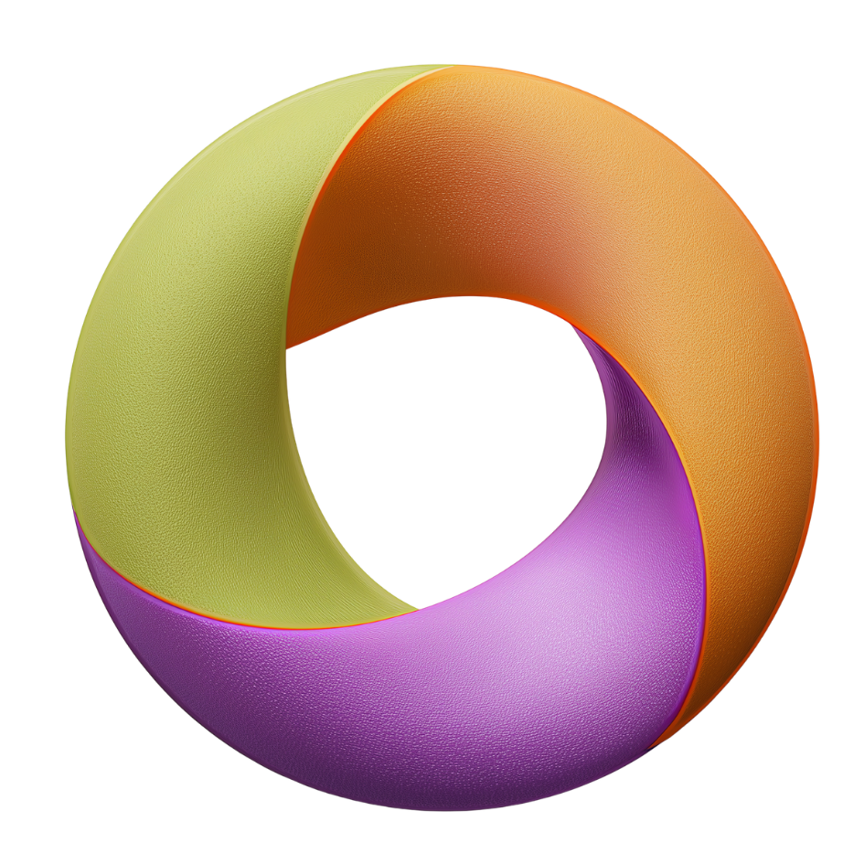

О проекте
All in one for teachers — это коллекция продуманных уроков, интерактивных активностей и экзаменационных материалов для учителей английского. Основная идея: методика + красота + интерактив.

All in one for teachersAll in one for teachers — это коллекция продуманных уроков, интерактивных активностей и экзаменационных материалов для учителей английского. Основная идея: методика + красота + интерактив.